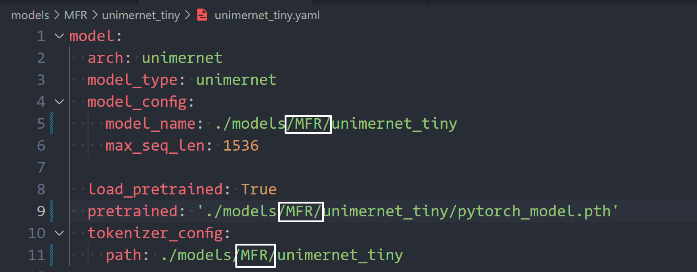
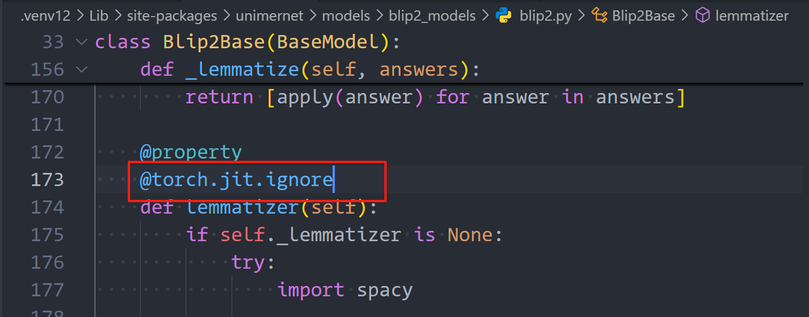

PS: 今天看网站才发现出BUG了（😅） 今天实现的部分是针对PDF-Extract-Kit的两个YOLO布局检测（公式检测）模型的。
其主要逻辑仍然是我之前写过的Yolo Binding的相关代码部分，但是不同的是这次我会使用静态链接库以提高可移植性。
Thanks to tch-rs，我们可以通过环境变量LIBTORCH_STATIC=1来选择使用静态链接库(回看一下，这个也没搞定)
下面需要解决的事情是将官方提供的pt模型转成jit模型提高速度和可移植性。
DocLayout-YOLO
首先，根据官网1 2说明，去modelscope/huggingface上下载模型，随后下载包如下：
pip install doclayout-yolo # 安装官方提供的包
pip install huggingface-hub # 没有这个无法运行
pip install torch torchvision torchaudio --index-url https://download.pytorch.org/whl/cu128 # 更新torch使其支持torch
检验安装
之后创建test.py检验安装情况：
import cv2
from doclayout_yolo import YOLOv10
# Load the pre-trained model
model = YOLOv10("./models/Layout/YOLO/doclayout_yolo_ft.pt")
# Perform prediction
det_res = model.predict(
"path/to/image", # Image to predict
imgsz=1024, # Prediction image size
conf=0.2, # Confidence threshold
device="cuda:0" # Device to use (e.g., 'cuda:0' or 'cpu')
)
# Annotate and save the result
annotated_frame = det_res[0].plot(pil=True, line_width=5, font_size=20)
cv2.imwrite("result.jpg", annotated_frame)
看到终端输出类似即说明安装成功：
Speed: 8.4ms preprocess, 112.7ms inference, 101.9ms postprocess per image at shape (1, 3, 1024, 768)
开始导出
from doclayout_yolo import YOLOv10
# Load the pre-trained model
model = YOLOv10("../models/Layout/YOLO/doclayout_yolo_ft.pt")
model.export(format="torchscript")
看到终端输出类似即说明导出成功：
Ultralytics YOLOv0.0.3 🚀 Python-3.13.3 torch-2.7.0+cu128 CPU (12th Gen Intel Core(TM) i7-12700H)
PyTorch: starting from 'E:\Projects\PDF-Extract-Kit-1.0\weights\..\models\Layout\YOLO\doclayout_yolo_ft.pt' with input shape (1, 3, 1024, 1024) BCHW and output shape(s) (1, 300, 6) (38.8 MB)
TorchScript: starting export with torch 2.7.0+cu128...
TorchScript: export success ✅ 17.8s, saved as 'E:\Projects\PDF-Extract-Kit-1.0\weights\..\models\Layout\YOLO\doclayout_yolo_ft.torchscript' (78.1 MB)
Export complete (21.7s)
Results saved to E:\Projects\PDF-Extract-Kit-1.0\models\Layout\YOLO
Predict: yolo predict task=detect model=E:\Projects\PDF-Extract-Kit-1.0\weights\..\models\Layout\YOLO\doclayout_yolo_ft.torchscript imgsz=1024
Validate: yolo val task=detect model=E:\Projects\PDF-Extract-Kit-1.0\weights\..\models\Layout\YOLO\doclayout_yolo_ft.torchscript imgsz=1024 data=/mnt/petrelfs/zhaozhiyuan/layout/yolov10/ultralytics/cfg/datasets/0830_mixed.yaml
Visualize: https://netron.app
至此，我们就搞定了jit格式的导出
但是现有的Rust推理框架不完全兼容相关模型，所以我进行了修理完善并refactor了相关代码，让功能更好用
公式识别
该模型是一个基于yolov8的模型，目测没有没有什么奇特之处，用官方库即可
Ultralytics 8.3.122 Python-3.13.3 torch-2.7.0+cu128 CPU (12th Gen Intel Core(TM) i7-12700H)
YOLOv8l summary (fused): 112 layers, 43,608,150 parameters, 0 gradients, 164.8 GFLOPs
PyTorch: starting from 'models\MFD\YOLO\yolo_v8_ft.pt' with input shape (1, 3, 1888, 1888) BCHW and output shape(s) (1, 6, 73101) (333.7 MB)
TorchScript: starting export with torch 2.7.0+cu128...
TorchScript: export success 26.5s, saved as 'models\MFD\YOLO\yolo_v8_ft.torchscript' (167.7 MB)
Export complete (37.7s)
Results saved to E:\Projects\PDF-Extract-Kit-1.0\models\MFD\YOLO
Predict: yolo predict task=detect model=models\MFD\YOLO\yolo_v8_ft.torchscript imgsz=1888
Validate: yolo val task=detect model=models\MFD\YOLO\yolo_v8_ft.torchscript imgsz=1888 data=/mnt/petrelfs/ouyanglinke/document-ocr/ultralytics/cfg/mfd_dataset/mfd_v4_newtrain_addignore_withouscihubtrain_addr4.yaml
Visualize: https://netron.app
公式转LaTex
这步真是非常痛苦的事情，他的模型写的糊里糊涂的，而且代码不是很易读
不过Thanks to DeepwikiCommand Line Interface | opendatalab/UniMERNet | DeepWiki，我最终还是想办法来解决这个问题
其官方包使用了严格的huggingface-hub，这就导致其依赖于严格版本的tokenizers，但是这玩意不支持python3.13，于是我只能被迫下载python3.12
下面对模型配置文件进行修改，使其能正确指向文件： 
然后根据claude的提示添加了装饰器： 
拉倒吧，这个有点过于麻烦了，而且前后处理也没说，不太好弄
又干俩小时，确实是难绷，拉倒吧，试试用Nuitka the Python Compiler — Nuitka the Python Compiler打个包
也不行，现在使用pyinstaller打包，可以正常打包出来，下面解决一个问题
FileNotFoundError: [Errno 2] No such file or directory: 'E:\\Projects\\package-onnx\\dist\\run\\_internal\\unimernet\\configs\\default.yaml'
我的方案是直接从.venv\Lib\site-packages\unimernet\configs里面复制一个到_internal\unimernet\configs\default.yaml
PS：需要拷贝完整
config文件夹
下一个问题：
Failed to load model: Failed to import transformers.models.gemma2.configuration_gemma2 because of the following error (look up to see its traceback):
No module named 'transformers.models.gemma2.configuration_gemma2'
解决方案同上
NO_SUCHFILE : Load model from E:\Projects\package-onnx\dist\run\_internal\onnxocr\models\ppocrv4\det\det.onnx failed:Load model E:\Projects\package-onnx\dist\run\_internal\onnxocr\models\ppocrv4\det\det.onnx failed. File doesn't exist
解决方案同上
这个玩意缺了不少素材，我在文件夹下面打了一个patch包，下次打包时之后放进去就好了
最后修改于 2025-05-27